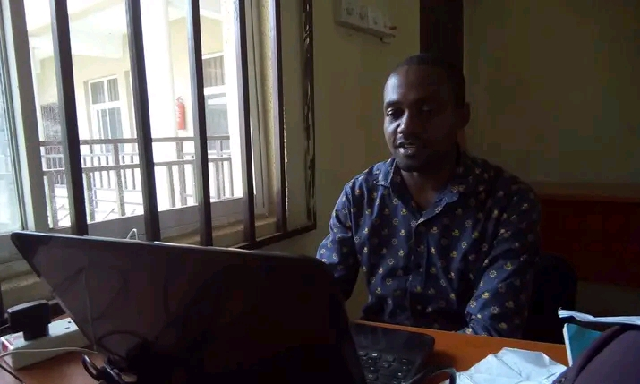

TERSUR IORVER
Mr. Tersur Iorver also known as Rex, a native of mbatsum Mbateren in ukum Local Goverment Area of Benue state. Born from the family of Jonathan Iorver Orgen Iwenge. I am married with a child. Farming is our pride.
I begged, a bachelor Degree in Agriculture and Bio-resource Engineering from Abubakar Tafawa Balewa University Bauchi ATBU. M.sc in Postharvest Engineering and Technology with Center For Food Technology and Research CEFTE BSU(in view) and also a certificate in Education with College Of Education Katsina-ala. I am a registered member of TRCN (Teachers Registration Council of Nigeria), well train in project management and community mobilization. I love coding, watching football and playing chess. I Work in difference organization including ICT and Schools. currently i am working with Flora Home International School Abuja Nigeria.
I am commited to achieve my dream of becoming a software developer, my Goal is To add value, knowledge experience and capacity to myself and my community through innovation in other to grow into a batter person and professional.